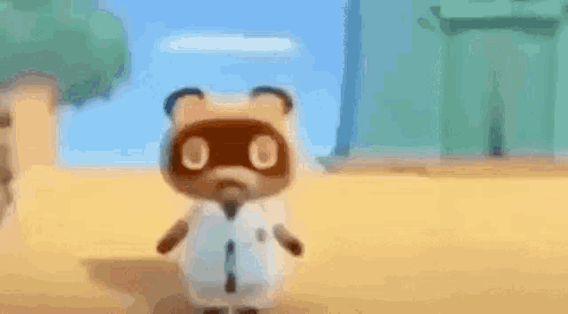

Historia:

Historia y Roles:
Tom Nook es un mapache ficticio perteneciente a la saga de videojuegos "Animal Crossing", el cual se encarga de varias funciones a lo largo de todos los juegos. Desde cobrador de impuestos, Manejador de venta de casas e hipotecas, Ayudante de administrador de una isla turistica desolada o dependiente de tienda.
Familia:
Tom Nook posee una familia conocida bastante recortada, solo contando con Tendo y Nendo, sus sobrinos.
Mitos y leyendas:
Tom Nook es descrito como un mapache Tanuki considerado por unos como codicioso y otros lo consideran alguien que simplemente hace su trabajo, descrito como un "primer jefe".
Se sospecha que Tom Nook es un mafioso millonario el cual le cobra al jugador cuotas abusivos y malversa varios recursos del lugar en el que se encuentre laburando.
Información Tecnica
Datos curiosos de Tom Nook:
- Se cree que Tom Nook posee un patrimonio neto de 5.77 Trillones de dolares, superando la riqueza de Jeff Bezos 40 veces.
- Ha llegado a apareces en la saga de videojuegos Super Smash Bros.
- Segun la lista de el sitio web GameSpy, Tom Nook se encuentra en el top 74 de villanos de los videojuegos.
- Tom Nook debuto en el juego: Dōbutsu no Mori en 2001 para la Nintendo 64. Luego fue re-lanzado en Gamecube como Animal Crossing.
- Se cree que los sobrinos de Tom Nook se les paga una fracción de cada venta, por lo que son sobreexplotados.
Top momentos más pros de Tom Nook
- Cuando te estafa con la hipoteca de tu casa.
- Cuando convierte una isla en un resort ilegal y te pone a chambear.
- Cuando se rie.
Ficha Tecnica
| Nombre Completo | Tom Nook (Tanukichi) |
|---|---|
| Edad | 50 años |
| Peso | 3.52 onzas |
| Altura | 22 centimetros |
| Primera aparición | Dōbutsu no Mori (Nintendo 64) |
| Debilidad | No pagarle la hipoteca |
| Alias | El capo |
Formulario de fans:
Enviale un saludo a Tom Nook:
Galería
.jpeg)
.jpeg)


